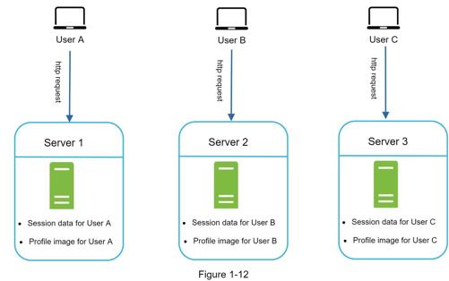
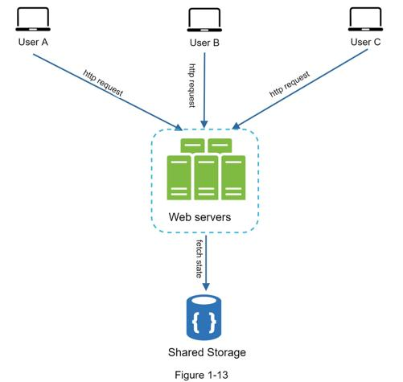
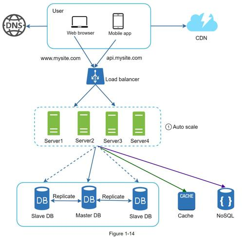

Now it is time to consider scaling the web tier horizontally. For this, we need to move state (for instance user session data) out of the web tier. A good practice is to store session data in the persistent storage such as relational database or NoSQL. Each web server in the cluster can access state data from databases. This is called stateless web tier.
A stateful server and stateless server has some key differences. A stateful server remembers client data (state) from one request to the next. A stateless server keeps no state information.
Figure 1-12 shows an example of a stateful architecture.

In Figure 1-12, user A’s session data and profile image are stored in Server 1. To authenticate User A, HTTP requests must be routed to Server 1. If a request is sent to other servers like Server 2, authentication would fail because Server 2 does not contain User A’s session data. Similarly, all HTTP requests from User B must be routed to Server 2; all requests from User C must be sent to Server 3.
The issue is that every request from the same client must be routed to the same server. This can be done with sticky sessions in most load balancers [10]; however, this adds the overhead. Adding or removing servers is much more difficult with this approach. It is also challenging to handle server failures.
Figure 1-13 shows the stateless architecture.

In this stateless architecture, HTTP requests from users can be sent to any web servers, which fetch state data from a shared data store. State data is stored in a shared data store and kept out of web servers. A stateless system is simpler, more robust, and scalable.
Figure 1-14 shows the updated design with a stateless web tier.

In Figure 1-14, we move the session data out of the web tier and store them in the persistent data store. The shared data store could be a relational database, Memcached/Redis, NoSQL, etc. The NoSQL data store is chosen as it is easy to scale. Autoscaling means adding or removing web servers automatically based on the traffic load. After the state data is removed out of web servers, auto-scaling of the web tier is easily achieved by adding or removing servers based on traffic load.
Your website grows rapidly and attracts a significant number of users internationally. To improve availability and provide a better user experience across wider geographical areas, supporting multiple data centers is crucial.